อัปเดตล่าสุด: 6 ตุลาคม 2569 (2026-10-06) · ระบบ stone_slab_inventory เวอร์ชัน 19.0.2.106 (หลังรอบ Slab = Lot, ADR-087) · ภาพหน้าจอทั้งหมดมาจากการทดลองใช้งานจริงบนระบบทดสอบ เมื่อ 5 ตุลาคม 2569
บทนี้อธิบายเรื่อง Slab (แผ่นหิน) ตั้งแต่ว่า Slab คืออะไร ทำไมระบบคิดแบบนี้ ไล่ไปทีละขั้นตั้งแต่ได้แผ่นมา (ตัดจาก Block หรือซื้อแผ่นสำเร็จรูป) จนถึงขาย ส่งของ ออกใบแจ้งหนี้ และรับคืน และสุดท้ายคือ "ถ้าเกิดเหตุการณ์แบบนี้ ระบบจะทำอะไร" ทุกภาพเป็นหน้าจอที่ทดลองใช้งานจริง ไม่ใช่ภาพจำลอง และตัวเลขทุกตัวในบทนี้มาจากการทดลองรอบเดียวกัน อ่านคู่กับ บทที่ 30 Block ซึ่งเป็นต้นทางของ Slab
1. Slab คืออะไร
Slab คือแผ่นหินหนึ่งแผ่น ที่ได้จากการตัด Block หรือซื้อแผ่นสำเร็จรูปจากผู้ขาย เป็นสินค้าที่ขายให้ลูกค้าได้โดยตรง หรือเป็นวัตถุดิบของสินค้าสำเร็จรูป (FG) เช่น เคาน์เตอร์
BLK-26-0006-1 ตัดจาก Block, หรือ SLB-26-0001 ซื้อสำเร็จรูป)2. แนวคิดหลัก 6 ข้อ
- หนึ่งแผ่นจริง = หนึ่ง Serial ซื้อ 4 แผ่นก็มี Serial 4 เลข ตัวเลข "จำนวน" ในใบสั่งซื้อคือจำนวนแผ่น
- ซื้อขายเป็น ตร.ม. แต่นับสต็อกเป็นแผ่น ตร.ม. ของแต่ละแผ่นมาจากขนาดจริงของแผ่นนั้น แผ่นต่างขนาดกันจึงมีพื้นที่ต่างกัน
- แผ่นเกิดได้ 2 ทางเท่านั้น คือ (ก) ตัดจาก Block ด้วยใบตัด (Cut Order) หรือ (ข) ซื้อแผ่นสำเร็จรูปผ่านใบรับของ (Receipt) ทางที่สองกรอกขนาดทีละแผ่นที่ใบรับของ เหมือนที่ Block กรอกขนาดตอนรับของ
- สถานะของแผ่นดูจาก "ตำแหน่งที่แผ่นอยู่" ไม่มีใครพิมพ์สถานะเอง เช่น อยู่ Stone Available = พร้อมขาย, อยู่ที่ลูกค้า = ขายแล้ว, อยู่ Returned - Inspect = รอตรวจ
- เลือกแผ่นก่อนขายได้ทีละแผ่น ที่ใบสั่งขายเลือกได้เลยว่าจะขายแผ่นเลขไหน ตามการออกแบบแผ่นที่ถูกเลือกไว้แล้วคนอื่นเลือกซ้ำไม่ได้
- ส่งของต้องสแกน Serial ระบบกันการส่งผิดแผ่น ต้องสแกนหรือพิมพ์ชื่อ Serial ให้ตรงกับแผ่นที่ส่งก่อนกด Validate
3. ภาพรวมขั้นตอน
นอกเหนือจากนี้มีอีก 1 เส้นทาง: ลูกค้าคืนแผ่น (รับเข้าที่ "รอตรวจ" แล้วนำกลับไปขาย หรือตัดทิ้ง)
4. ขั้นตอนทีละหน้าจอ
4.1 ได้แผ่นจากการตัด Block (Cut Order)
ทางที่หนึ่ง: ตัด Block ที่มีอยู่ในคลังให้เป็นแผ่น ไปที่ Manufacturing → Operations → Manufacturing Orders → New แล้วเลือก Stone Block ที่จะตัด
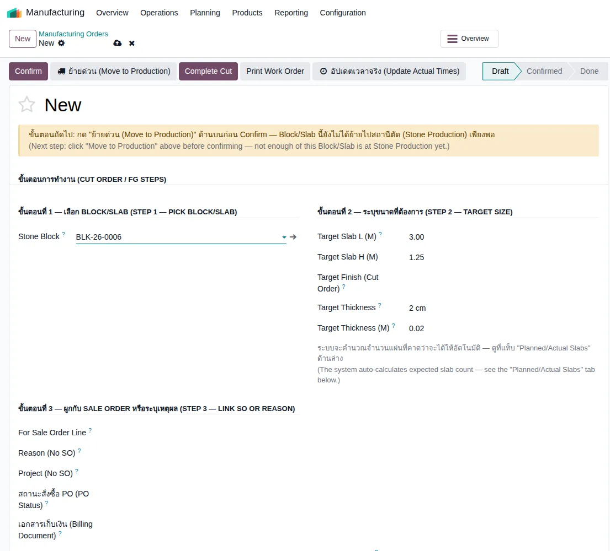
ระบบเติมขนาดแผ่นที่จะตัดให้เอง (กว้าง 3.00 × สูง 1.25 ม. หนา 2 ซม.) และคำนวณจำนวนแผ่นที่คาดว่าจะได้ไว้ที่แท็บ Planned/Actual Slabs ตัวอย่างนี้ Block 6.00 ลบ.ม. ตัดได้ 80 แผ่นพอดี (แถวละ 1 แผ่น)
ขั้นที่ 1: ย้าย Block ไปสถานีตัด หลังกด Save แล้วกดปุ่ม ย้ายด่วน (Move to Production)
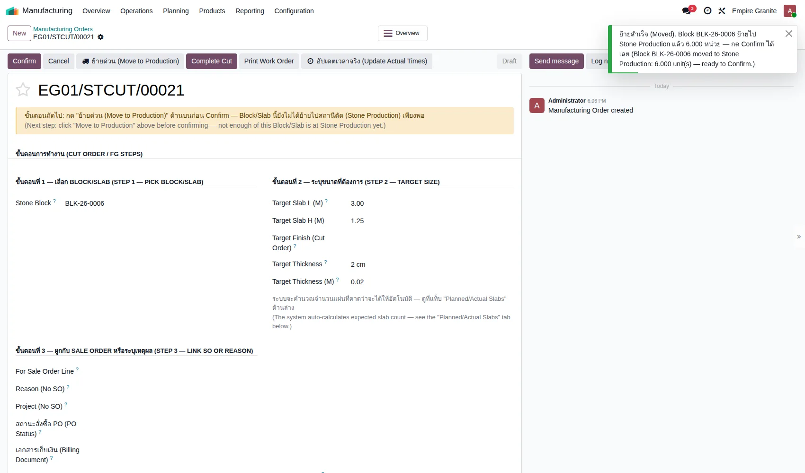
ระบบแจ้งสีเขียวว่า Block ย้ายไป Stone Production แล้ว (ย้ายจาก Stone Available ไปสถานีตัด) แล้วกด Confirm ได้เลย
ขั้นที่ 2: เลือกเหตุผลแล้ว Confirm ใบตัดที่ไม่ผูกกับใบสั่งขาย ต้องเลือกช่อง Reason (No SO) ก่อนเสมอ ถ้าตัดเข้าสต็อกทั่วไปให้เลือก "อื่นๆ (Other)" แล้ว Save และ Confirm ใบตัดเปลี่ยนเป็น In Progress
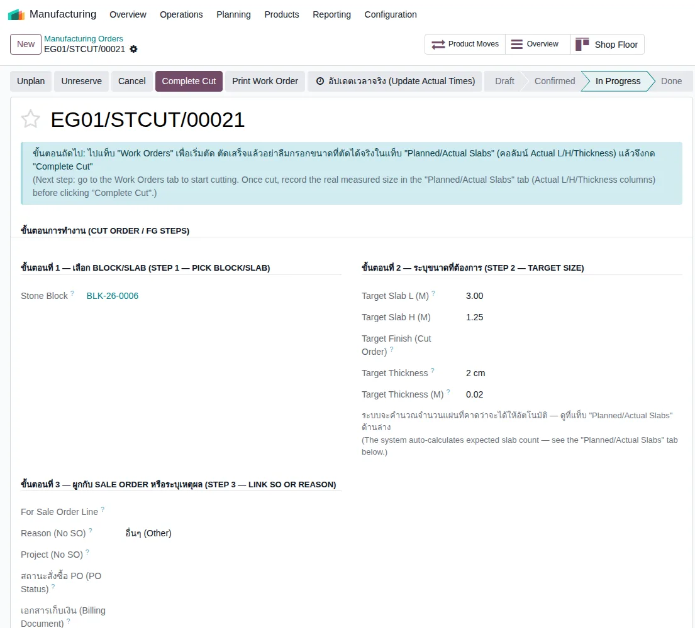
ขั้นที่ 3: ตัดเสร็จ กด Complete Cut ถ้าหน้างานตัดได้ขนาดจริงต่างจากแผน ให้แก้คอลัมน์ Actual L / H / Thickness ที่แท็บ Planned/Actual Slabs ก่อนกดปุ่ม
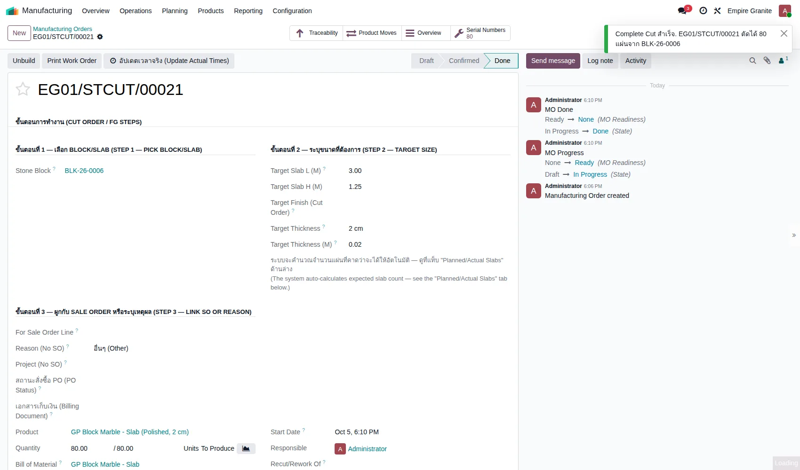
ระบบแจ้ง "Complete Cut สำเร็จ ตัดได้ 80 แผ่นจาก BLK-26-0006" ใบตัดขึ้น Done และปุ่ม Serial Numbers แสดง 80
4.2 ตรวจ Slab ที่ตัดได้
ไปที่ Stone Slab → Slabs → All Slabs แล้วพิมพ์ชื่อ Block ในช่องค้นหา จะเห็นแผ่นแยกเป็นแผ่นละบรรทัด ตั้งแต่ BLK-26-0006-1 ต่อเนื่องถึง -80 ขนาด 3.00 × 1.25 × 0.020 ม. = 3.75 ตร.ม. (รวม 300 ตร.ม.) สถานะ Available และคอลัมน์ Block ชี้กลับไปที่ Block ต้นทาง
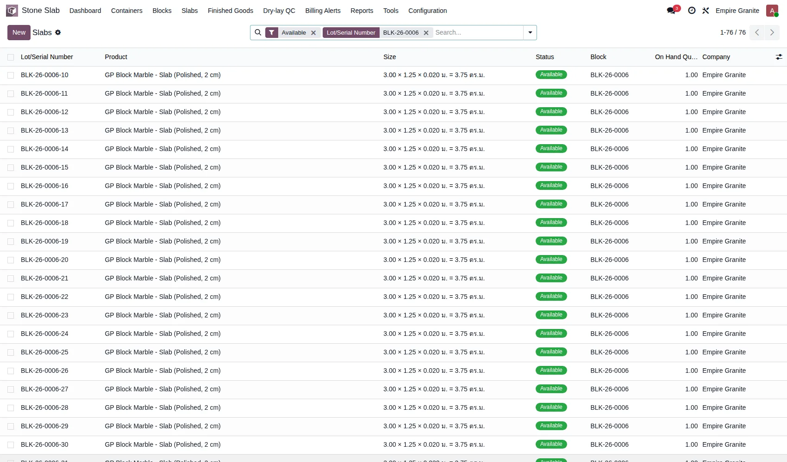
4.3 ซื้อ Slab สำเร็จรูป — ใบสั่งซื้อ (PO)
ทางที่สอง: ซื้อแผ่นสำเร็จรูปจากผู้ขาย สร้างใบสั่งซื้อที่ Purchase → New เลือกผู้ขาย กด Add a product เลือกสินค้า Slab ของหินชนิดนั้น ใส่จำนวนแผ่น และราคา Price / Sq.M (ราคาต่อตารางเมตร) แล้วกด Confirm Order
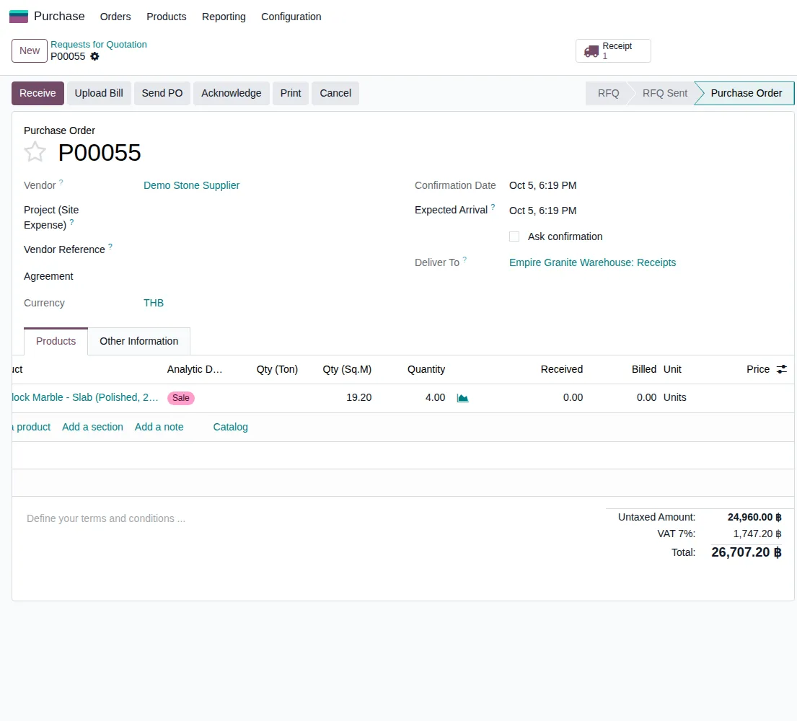
ตัวอย่าง: สั่ง 4 แผ่น ราคา 1,300 ฿/ตร.ม. ช่อง Qty (Sq.M) ระบบคำนวณให้ 19.20 ตร.ม. (4 แผ่น × 4.80 จากขนาดมาตรฐานของสินค้า) ยอดก่อน VAT 24,960 บาท
4.4 รับของ (Receipt) — กรอกขนาดจริงทีละแผ่น
- ที่ PO กดปุ่ม Receive เปิดใบรับของ
- ที่แถวสินค้ากด Details จะเห็นแถวละ 1 แผ่น
- แต่ละแถวกรอก กว้าง / ยาว / หนา ของแผ่นที่วัดได้จริง (ช่อง Lot/Serial เว้นว่างได้ ระบบตั้งชื่อให้เอง)
- กด Save แล้วกด Validate
ตัวอย่าง: แผ่น 1 กว้าง 1.58 × ยาว 2.95 · แผ่น 2 กว้าง 1.60 × ยาว 3.00 · แผ่น 3 กว้าง 1.55 × ยาว 2.90 · แผ่น 4 กว้าง 1.60 × ยาว 3.00 หนาทุกแผ่น 0.02 ม.
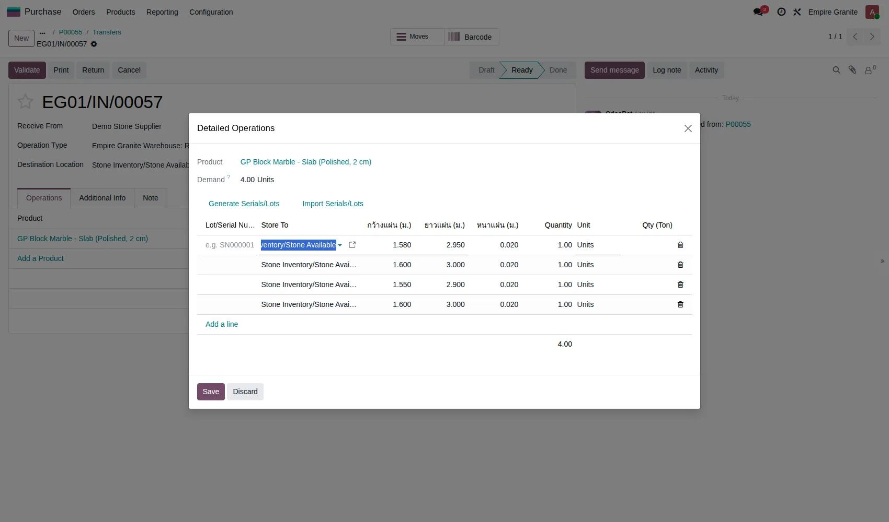
หลัง Validate ใบรับของขึ้น Done แยกเป็นบรรทัดละ 1 แผ่น ระบบตั้งชื่อ Serial ให้เอง (SLB-26-0001 ถึง SLB-26-0004) และ มูลค่าสต็อกคิดจากพื้นที่จริงของแต่ละแผ่น ไม่ใช่ขนาดมาตรฐาน:
| แผ่น | ขนาด (ม.) | พื้นที่ (ตร.ม.) | มูลค่า (× 1,300) |
|---|---|---|---|
| SLB-26-0001 | 1.58 × 2.95 | 4.66 | 6,059.30 |
| SLB-26-0002 | 1.60 × 3.00 | 4.80 | 6,240.00 |
| SLB-26-0003 | 1.55 × 2.90 | 4.50 | 5,843.50 |
| SLB-26-0004 | 1.60 × 3.00 | 4.80 | 6,240.00 |
| รวม | 18.756 | 24,382.80 |
4.5 ตรวจ Slab ที่รับเข้ามา
ที่ Stone Slab → Slabs → All Slabs ค้นหา SLB-26 จะเห็น 4 แผ่นตามขนาดที่วัด สถานะ Available คอลัมน์ Block ว่าง เพราะซื้อมาเป็นแผ่นสำเร็จ ไม่ได้ตัดจาก Block ของเรา
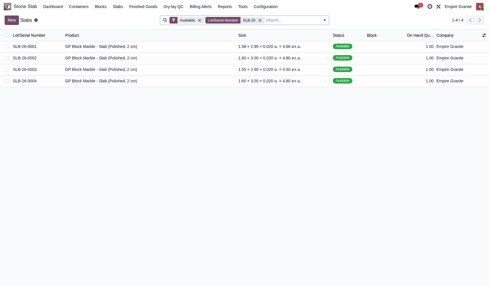
4.6 ขาย Slab — ใบสั่งขาย (SO)
สร้างใบเสนอราคา: ที่ Sales → New เลือกลูกค้า กด Add a product เลือกสินค้า Slab ในหน้าต่าง Configure your product เลือก Finish และ Thickness แล้วกด Confirm และ Save
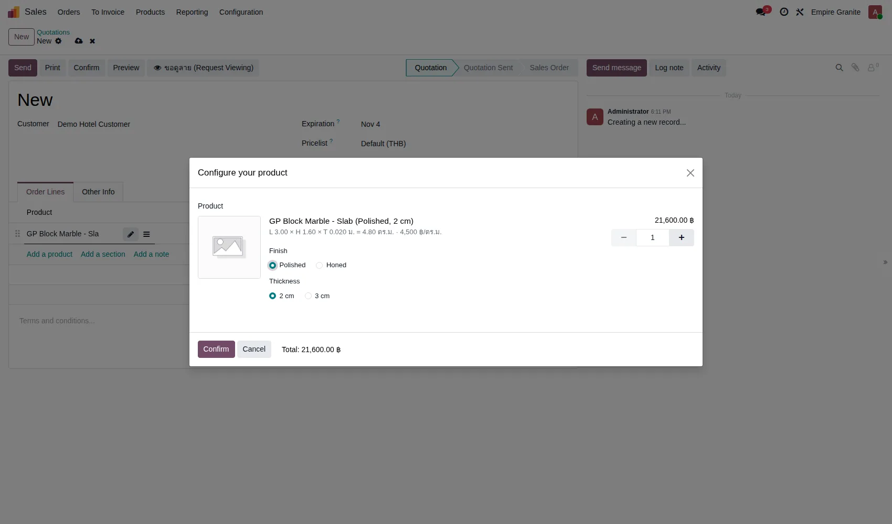
ได้บรรทัดสินค้า "Slab (Polished, 2 cm)" ราคา 4,500 บาท/ตร.ม. ตอนนี้ยอดยังเป็นราคาตามขนาดมาตรฐาน (3.00 × 1.60 = 4.80 ตร.ม. → 21,600 บาท) ยอดจริงจะคำนวณใหม่เมื่อเลือกแผ่นในขั้นถัดไป
เลือกแผ่นที่จะขาย: ที่ท้ายบรรทัดสินค้า กดปุ่มไอคอนรายการ เลือก Slab / Select Slabs ในหน้าต่างกด Add a line แล้วเลือก Slab ทีละแผ่น (พิมพ์ชื่อแล้วเลือก) ทำซ้ำจนครบ แล้วกด ยืนยันการเลือก
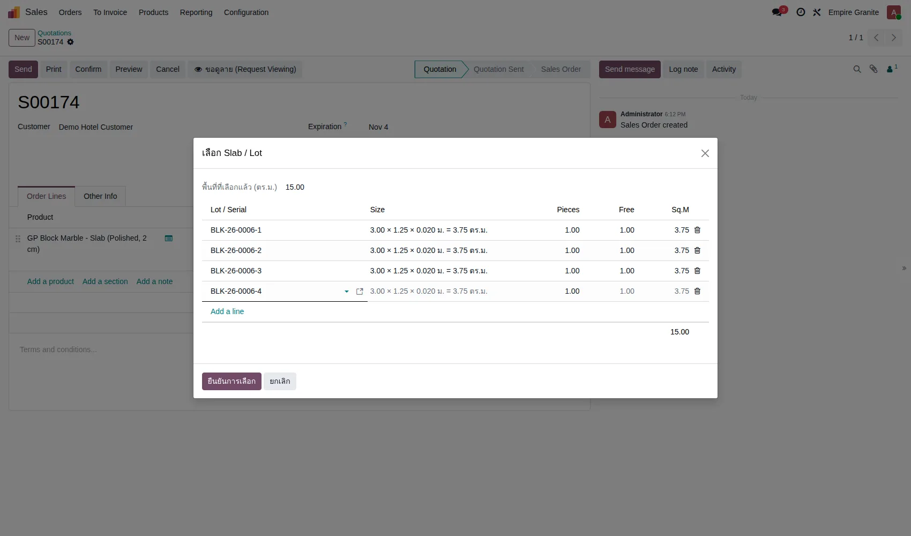
หน้าต่างแสดงขนาด จำนวนที่ว่าง และ ตร.ม. ของแต่ละแผ่น ตัวอย่างเลือก 4 แผ่น (BLK-26-0006-1 ถึง -4) พื้นที่รวม 15.00 ตร.ม. พอยืนยัน บรรทัดสินค้าเปลี่ยนเป็น "4 แผ่น = 15.00 ตร.ม. · 4,500 ฿/ตร.ม." ยอดก่อน VAT 67,500 บาท, VAT 4,725, รวม 72,225
กด Confirm ใบสั่งขาย: สถานะเป็น Sales Order มีสมาร์ทปุ่ม Delivery 1 ใบ และ Slabs 4 แผ่น
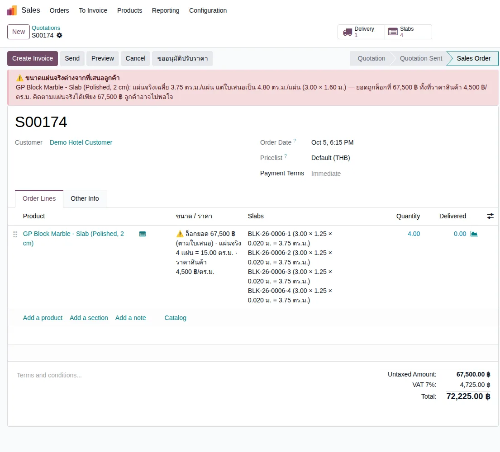
4.7 ส่งของ — สแกน Serial ทุกแผ่น
ที่ SO กดสมาร์ทปุ่ม Delivery แล้วที่แถวสินค้ากด Details ที่คอลัมน์ Scanned Serial ของแต่ละแถว สแกนหรือพิมพ์ชื่อ Serial ให้ตรงกับแผ่นในแถวนั้น กด Save แล้วกด Validate
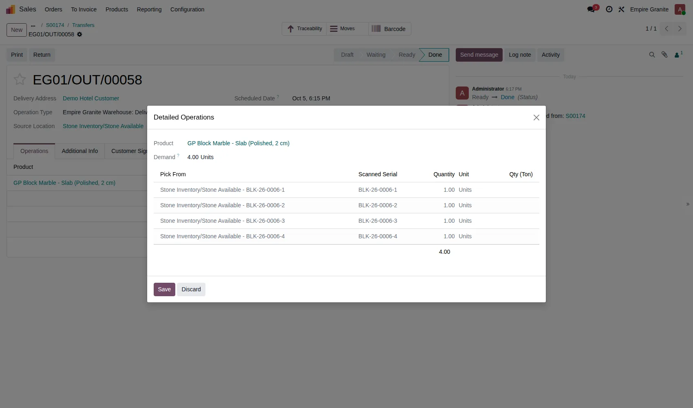
ใบส่งของขึ้น Done ปริมาณ 4.00 ตัดสต็อกจาก Stone Available แผ่นทั้ง 4 ไม่อยู่ในรายการ Available อีก (เหลือ 76 แผ่นของ Block เดิม)
4.8 เก็บเงิน — ใบแจ้งหนี้และรายการบัญชี
ที่ SO กด Create Invoice เลือก Regular invoice แล้ว Create Draft จากนั้นที่ใบแจ้งหนี้กด Confirm และเปิดแท็บ Journal Items
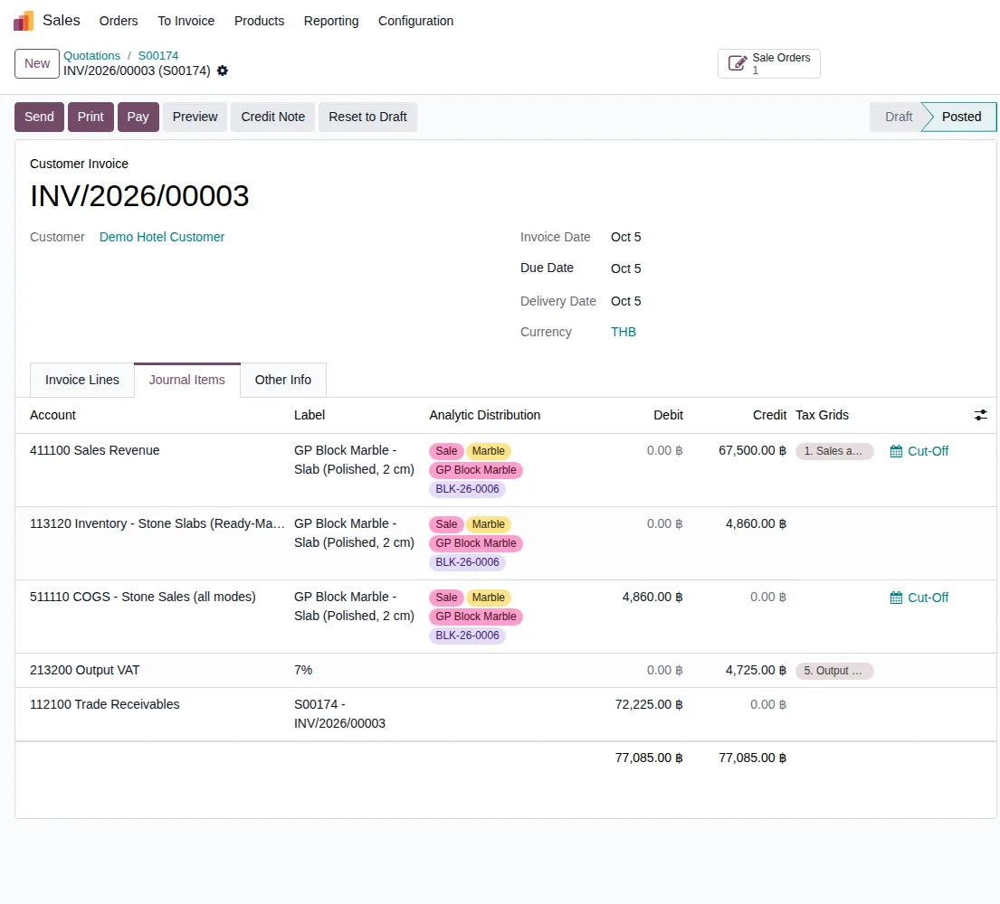
| รายการ | บัญชี | จำนวนเงิน (บาท) |
|---|---|---|
| รายได้ | 411100 | 67,500.00 |
| VAT ขาย | 213200 | 4,725.00 |
| ลูกหนี้ | 112100 | 72,225.00 |
| ต้นทุนขาย | 511110 | 4,860.00 |
| ตัดสต็อกออก | 113120 | 4,860.00 |
ต้นทุนขาย 4,860 = 4 แผ่น × 1,215 ตรงกับต้นทุนต่อแผ่นที่คิดไว้ตอนตัด (หัวข้อ 4.1) เพราะต้นทุนผูกกับแผ่นแต่ละแผ่น ไม่ใช่เฉลี่ยทั้งกอง
4.9 ลูกค้าคืน Slab (Return)
เปิดใบส่งของที่ Done กดปุ่ม Return แล้วกด Return All (หน้าต่างเริ่มต้นแสดง 0.00 ซึ่งเป็นปกติของ Odoo)
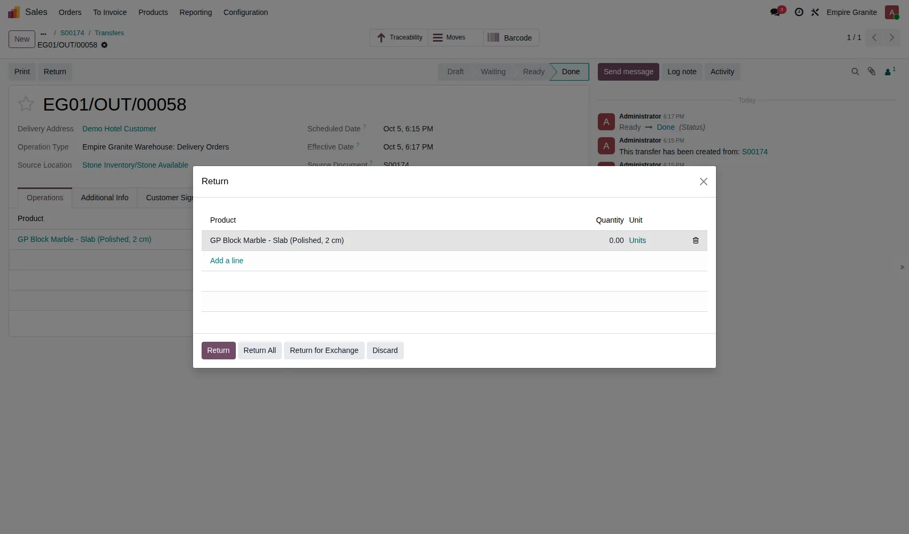
ระบบสร้างใบรับคืน ปลายทางถูกตั้งเป็น Stone Inventory / Returned - Inspect ให้อัตโนมัติ เพราะแผ่นที่ลูกค้าคืนต้องตรวจก่อนเสมอ
ระบุแผ่นที่คืนจริง: ที่แถวสินค้ากด Details แล้ว Add a line พิมพ์ชื่อ Slab ใส่จำนวน 1 ทำซ้ำทีละแผ่น (ใบรับคืนไม่เลือกแผ่นไว้ให้ ผู้รับของต้องระบุเอง เพราะลูกค้าอาจคืนไม่ครบ และรายการที่ให้เลือกจะมีเฉพาะแผ่นที่อยู่ที่ลูกค้า)
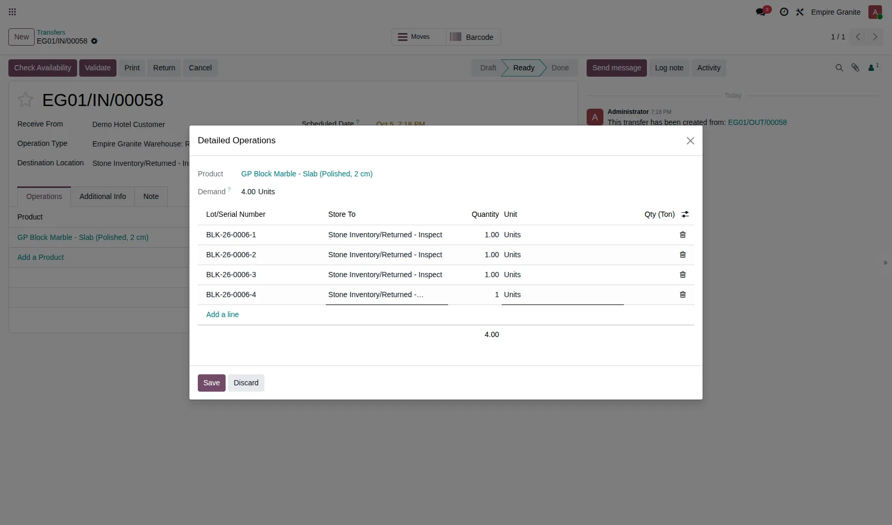
กด Validate ใบรับคืนขึ้น Done
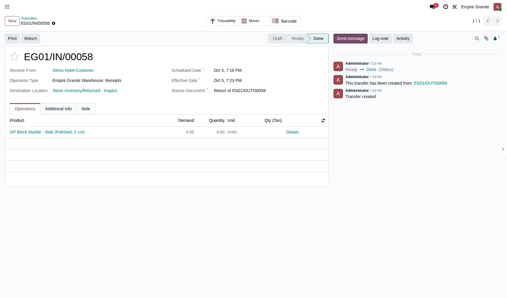
แผ่นที่คืนขึ้นสถานะ Returned - Pending Inspection (สีส้ม) อยู่ที่ Returned - Inspect ยังไม่ถูกนับเป็นของพร้อมขาย (ไม่โผล่ในตัวกรอง Available)
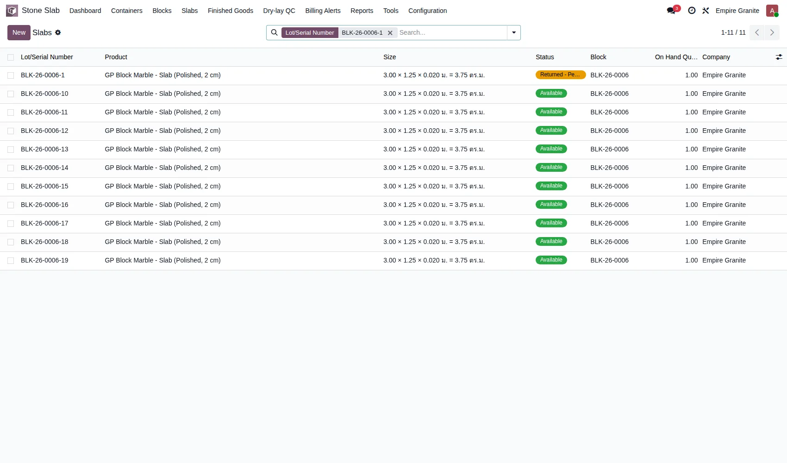
ตรวจแล้ว นำกลับไปขาย: เปิดหน้า Slab ที่คืน กดปุ่ม ตรวจแล้ว — นำกลับไปขาย ทำซ้ำกับแผ่นที่เหลือ สถานะกลับเป็น Available ที่ Stone Available ต้นทุนยังเป็น 1,215 บาทเท่าเดิม และเลือกขายได้ใหม่
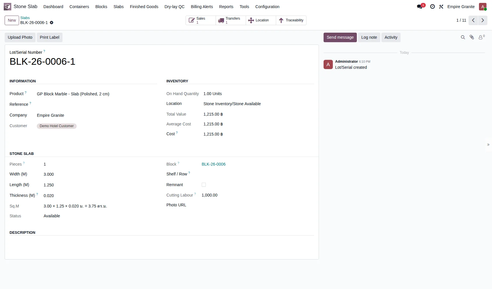
ถ้าตรวจแล้วแผ่นชำรุด ให้กดปุ่ม ชำรุด — ตัดทิ้ง (Scrap) แทน (ยังไม่ได้ทดลองกดในรอบนี้)
5. สรุปเงื่อนไขทั้งหมด
5.1 การได้แผ่นมา
| สถานการณ์ | ระบบทำอย่างไร |
|---|---|
| ใบตัดที่ไม่ผูกใบสั่งขาย ไม่เลือก Reason (No SO) | ไม่ให้ Confirm ให้เลือกเหตุผลก่อน (ตัดเข้าสต็อกเลือก "อื่นๆ") |
| ตัดได้ขนาดจริงต่างจากแผน | แก้ Actual L / H / Thickness ก่อน Complete Cut แผ่นเก็บขนาดจริง |
| ซื้อ Slab สำเร็จรูป | ระบบตั้งชื่อ Serial ให้เอง (SLB-yy-nnnn) มูลค่า = ฿/ตร.ม. ใน PO × พื้นที่จริงของแต่ละแผ่น |
5.2 การขาย ส่งของ เก็บเงิน
| สถานการณ์ | ระบบทำอย่างไร |
|---|---|
| เลือกแผ่นเข้าใบสั่งขาย | จำนวน = จำนวนแผ่น, ยอด = ตร.ม. จริงของแผ่นที่เลือก × ฿/ตร.ม. |
| ขนาดแผ่นจริงต่างจากที่เสนอลูกค้า | เตือนด้วยแถบสีแดง แต่ไม่ห้าม ยอดถูกล็อกตามที่ตกลง |
| แผ่นที่เลือกไว้ในใบสั่งขายอื่นแล้ว | ตามการออกแบบ (ADR-087) คนอื่นเลือกซ้ำไม่ได้ ยังไม่ได้ทดลองกดยืนยันบนหน้าจอ |
| Validate ใบส่งของโดยไม่สแกน Serial ให้ครบ | ไม่ให้ผ่าน แจ้งรายชื่อแผ่นที่ขาด |
| ส่งของครบ | แผ่นออกจาก Stone Available ไปอยู่ที่ลูกค้า |
| ออกใบแจ้งหนี้ | ต้นทุนขายตามต้นทุนของแผ่นที่ส่งจริง (แผ่นละ 1,215 ในตัวอย่าง) |
5.3 การคืนของ
| สถานการณ์ | ระบบทำอย่างไร |
|---|---|
| ลูกค้าคืนแผ่น | เข้า Returned - Inspect ทุกกรณี ต้องตรวจก่อน |
| ระหว่างรอตรวจ | ไม่นับเป็นของพร้อมขาย ไม่โผล่ในตัวกรอง Available |
| ตรวจแล้วใช้ได้ | กลับ Stone Available เป็น Serial เดิม ต้นทุนเดิม |
| ตรวจแล้วชำรุด | ใช้ปุ่ม "ชำรุด — ตัดทิ้ง (Scrap)" |
| เลือก Serial ในใบรับคืน | เลือกได้เฉพาะแผ่นที่อยู่ที่ลูกค้า ไม่เลือกให้ล่วงหน้า |
6. สิ่งที่เปลี่ยนจากเดิม
| เดิม | ตอนนี้ |
|---|---|
| แผ่นเป็นเอกสารแยกอีกชนิด มีสถานะที่ต้องซิงค์กับตำแหน่งสต็อก | แผ่น = เลข Serial ของ Odoo เอง สถานะดูจากตำแหน่งที่อยู่ |
| ขนาดมี 2 ชุด (ขนาดคิดต้นทุน / ขนาดคิดราคา) ทำให้ราคาเพี้ยนได้ | ขนาดชุดเดียว เก็บที่แผ่น |
| ซื้อ Slab ผ่านใบสั่งซื้อไม่ได้ ต้องเพิ่มแถวมือที่หน้า Block | ซื้อผ่านใบรับของ กรอกขนาดทีละแผ่น เหมือน Block |
| ต้นทุนขายเป็นเฉลี่ยตามลำดับเข้าก่อน ผิดเมื่อแผ่นต้นทุนต่างกัน | ต้นทุนขายตามต้นทุนของแผ่นนั้น |
| พักแผ่นที่เลือกไว้ใน Hold ย้ายสต็อกจริง | เลือกแล้วแค่กันไม่ให้คนอื่นเลือกซ้ำ สต็อกไม่ย้ายจนกว่าส่งของ |
| ลูกค้าคืนแล้วเข้าคลังทั่วไป | เข้า Returned - Inspect เสมอ ตรวจก่อนค่อยนำกลับไปขาย |
7. คำถามที่พบบ่อย
ใส่ 4 ในช่องจำนวนของ PO Slab คือซื้อ 4 ตร.ม. หรือเปล่า
ไม่ใช่ครับ คือ 4 แผ่น ส่วนตร.ม. ระบบคำนวณให้เป็นค่าโดยประมาณ มูลค่าจริงคิดจากขนาดที่วัดตอนรับของ
ทำไมยอดใบสั่งขายไม่ตรงกับ ตร.ม. × ราคาที่เสนอไว้ตอนแรก
ตอนเสนอราคา ระบบใช้ขนาดมาตรฐาน (3.00 × 1.60) พอเลือกแผ่นจริง ระบบคิดจากขนาดจริง และล็อกยอดไว้ตามที่ตกลงกับลูกค้า ถ้าต่างกันมากจะมีแถบสีแดงเตือน
ทำไมสแกน Serial ไม่ผ่าน
ชื่อที่สแกนต้องตรงกับแผ่นในแถวนั้น ตรวจจากคอลัมน์ Lot ของแถว และสแกนให้ครบทุกแถวก่อน Validate
ลูกค้าคืนแผ่นแล้วหาแผ่นไม่เจอใน All Slabs
เอาตัวกรอง Available ออก แผ่นที่รอตรวจจะแสดงสถานะ Returned - Pending Inspection
ทำไมแผ่นที่ตัดจาก Block เดียวกันต้นทุนเท่ากันหมด
ระบบแบ่งต้นทุน Block ให้ทุกแผ่นเท่ากัน ไม่ถ่วงตามขนาดจริงของแผ่น (ดูข้อจำกัดข้อ 1)
8. ข้อจำกัดที่ทราบ
- ต้นทุนจากใบตัดแบ่งเท่ากันทุกแผ่น แม้แผ่นที่ตัดได้เล็กกว่าแผน (ตั้งใจเลื่อนไว้ ตามที่ผู้ใช้ตัดสินใจ)
- การคืนที่ตรวจแล้วชำรุด (Scrap) ยังไม่ได้ทดลอง และรายการบัญชีของการตัดทิ้งยังไม่ได้ตรวจสอบ
- การรับคืนในบทนี้ยังไม่รวมการออกใบลดหนี้ (Credit Note) ให้ลูกค้า
- การขายข้ามบริษัท (EG↔ES) และการซื้อ Slab สำเร็จรูปแล้วออกใบแจ้งหนี้ผู้ขาย ยังไม่ได้เดินจริงหลังรอบ Slab = Lot (ดูบทที่ 08)
- เศษหินที่เหลือจากใบตัดยังไม่ถูกบันทึกกลับเข้าสต็อกเป็นแผ่น/เศษ